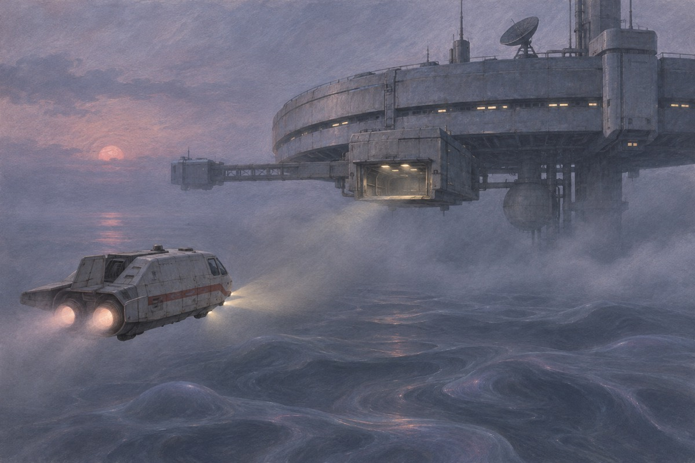
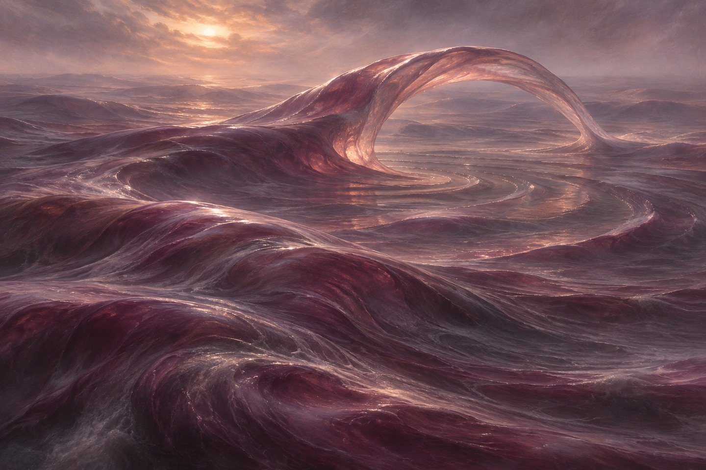
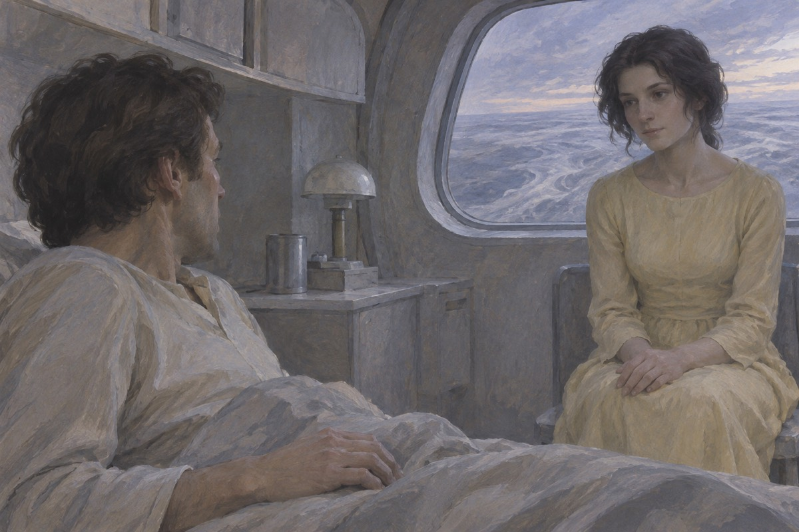
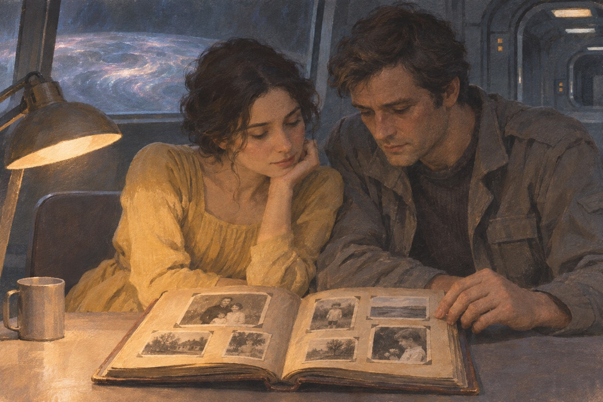
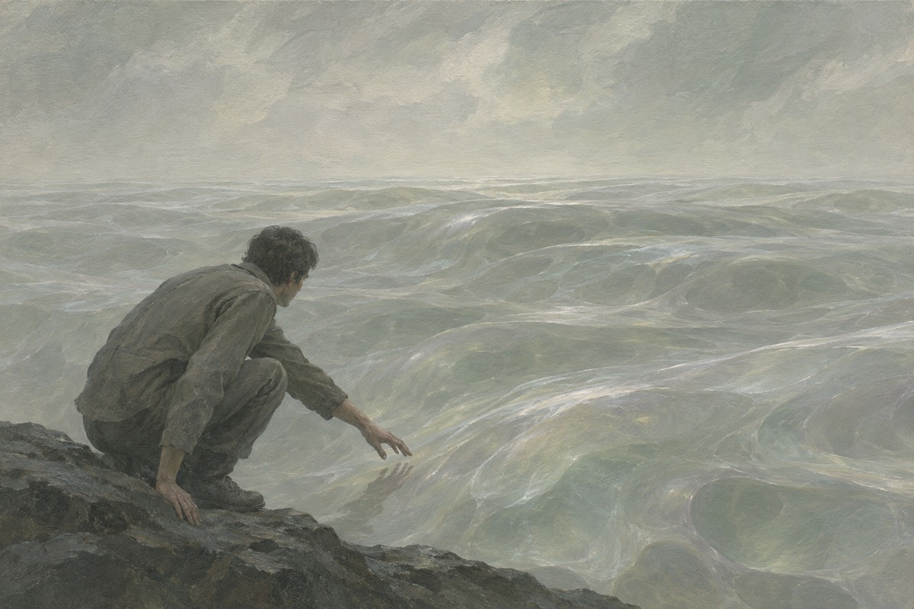

到达
凯尔文坐着一艘小飞船降落在索拉里斯站。这个站建在一片海的上方，海是胶质的，会动。他学过十年心理学，被派来研究这片海。站里应该有三个人，可接他的只有一个人，斯纳特。斯纳特说：你来得正好，也来得不好。斯纳特说：吉巴里安死了。他说：昨天。他说：他自己注射的。凯尔文说：为什么。斯纳特说：你住两天就知道了。斯纳特说：这里的规矩有三条：不要相信你看见的，不要一个人待着，不要开那扇门。凯尔文说：哪扇门。他说：你会知道。

黑孩子
他在走廊上看见一个黑人女人，赤着脚，穿着黄裙子，站在那儿看着他。他问斯纳特：站里还有别人。斯纳特说：没有。他说：那我刚才看见的是谁。斯纳特说：你看见了。他说：我看见了什么。他追过去，走廊尽头是墙。他回头看，那个女人不见了。墙上有水痕，像有人刚站过。他量了一下那个水痕的高度，一米六五。他想：这是一个人的高度。他又想：这里除了我们三个，没有别的人。
吉巴里安
吉巴里安的房间里一片狼藉，墙上有抓痕，桌上有两个杯子。凯尔文在他的录像里看见他坐着，眼睛通红，说：她来了，她又来了。他说：我不能再这样下去。他说完，把针扎进手臂。录像的最后几秒钟，镜头晃了一下，照到门口。门口站着一个人，看不清脸，只能看见一双赤脚。他把录像带倒回去，又看了一遍。这一次他看清了，那双脚是湿的，走过的地方留下了一串水印。水印一直通到门口。
海
索拉里斯的海覆盖了整个星球，厚几十公里。它会自己变形，会造出一些巨大的结构：有的像城市，有的像手，有的像婴儿。人类研究了一百年，写了几万篇论文，还是不知道它是什么。有人说它是活的，有人说它只是会动。凯尔文说：它有没有意识。斯纳特说：这个问题，我们问了一百年。他们放出探测器，探测器沉下去，信号断了。第二次放，信号传回来一段声音，像有人在很远的地方说话。他们把那段声音分析了十年。

海若
他醒来的时候，看见一个姑娘坐在床边。她穿着黄裙子，黑头发，脸是他二十年前的脸。她叫海若。她在他十岁那年死了，是自己注射的。她说：你怎么了。他说：你不是真的。她说：我是。他冲出去，把门锁上。她在里面敲门，敲了一夜。他坐在走廊上，抱着头。斯纳特走过来说：你也看见了。他说：是。斯纳特说：习惯就好。她说：你不认识我了。他说：我认识。她说：那你为什么不抱我。他说：因为你死了。她说：我没有。她说这句话的时候，眼睛是湿的。
出处 · 第 6 章 海若

打不开的门
他们商量怎么处理。斯纳特说：我试过杀她。凯尔文说：结果呢。他说：她回来了。他说：她第二天早上又在厨房煮咖啡。凯尔文说：那怎么办。他说：我不知道。他们决定把她发射到太空里去。凯尔文骗她上了一支小火箭。火箭飞出去，她在窗口看着他。他说：对不起。她张了张嘴，没有出声。火箭升空的时候，他站在观察窗前。他看见她把脸贴在窗上，嘴在动。他后来一直想，她那时候在说什么。
她又回来了
第二天早上，她又在厨房煮咖啡。她好像什么都不记得，只是有点害怕。她说：我昨晚做了一个梦。他说：什么梦。她说：梦见你把我送走了。他说：那是个梦吗。她说：我不知道。他看着她的侧脸，忽然想：这个人知道自己是什么吗。他说：你怕死吗。她说：我不知道死是什么。她煮的咖啡很难喝，放多了水。他喝完了。她说：不好喝吧。他说：不好喝。她说：那我明天少放水。他说：好。
萨托里斯
萨托里斯是站里第三个人，住在另一个舱。他做了一个实验：用仪器照射那个「客人」，看它会怎么样。结果是它散了，又聚回来。萨托里斯说：这不是人，这是一种结构。凯尔文说：可她疼。萨托里斯说：你把她当人，是因为你想。他说：她把你也当人吗。凯尔文说：我不知道。他说：那你为什么不去问。萨托里斯说：我照过她，她的结构跟我们一样。他说：可她不是人。凯尔文说：你怎么知道我们是。萨托里斯看了他一眼，没有说话。
书
海若在房间里找到一本书，是凯尔文小时候的相册。她一页一页地看，问他：这个孩子是你吗。他说：是。她说：你那时候很快乐。他说：是。她说：你现在不快乐。他说：是。她说：我想让你快乐。他说：你做不到。她说：为什么。他说：因为你不是真的。她低下头，说：我知道。她指着相册里一个女人问：这是谁。他说：我母亲。她说：她死了吗。他说：死了。她说：那她有没有回来找你。他说：没有。

复制
他们发现，海造出来的东西，是从人的记忆里取的。它把一个人最痛的那段记忆挖出来，做成一个活人，放在他面前。萨托里斯说：这是它的实验。凯尔文说：实验什么。他说：实验我们。凯尔文说：它为什么要这样做。萨托里斯说：也许它想知道我们是什么。他说：它把一个死人还给我们，看我们怎么办。萨托里斯说：它在做实验，实验的对象是我们。他说：它把我们的记忆拿出来，做成东西，看我们怎么反应。他说：这是最残忍的实验。
梦
海若开始做梦。她梦见自己是一个孩子，站在一片海边。她说：那片海会动。凯尔文说：那是索拉里斯。她说：我梦见它跟我说话。他说：它说什么。她说：它说它很想我们。他后来在笔记里写：她梦见了它，它也许也在梦见我们。他写完，把这一页撕了。她说：我梦见一片海，海跟我说话。他说：它说什么。她说：它说它很孤单。他说：那是它说的，还是你说的。她愣住了。
再一次
她第二次自杀。她把液氧倒在走廊上，然后点了一支烟。她烧得很干净，只剩一堆灰。凯尔文赶到的时候，斯纳特正在收拾。斯纳特说：她为什么这样做。凯尔文说：因为她知道她不是人。第二天早上，她又站在走廊上，赤着脚，穿着黄裙子。她说：我怎么又回来了。他说：我不知道。她说：我是不是做错了什么。他说：没有。斯纳特说：她为什么要这样做。凯尔文说：因为她知道自己会回来。他说：她想证明一件事。斯纳特说：证明什么。他说：证明她不是人。
决定
凯尔文决定回地球。他说：我受不了了。萨托里斯说：你回去也没用。他说：为什么。萨托里斯说：因为你已经看见它了。他说：那我就带着它回去。海若说：你走了，我怎么办。他说：你留下。她说：我会消失吗。他说：我不知道。她说：那你别走。他没有说话。萨托里斯说：你回去也忘不了。他说：我知道。萨托里斯说：那你回去做什么。他说：我想在有人的地方想一想。
送她走
他同意再做一次发射。这一次她没有反抗。她说：你说过，人都会死。他说：是。她说：那我也算活过。他说：算。她说：那你记住我。他说：我记住。火箭飞出去以后，他站在观察窗前，看着那个小点越来越小。他说：对不起。他说：谢谢你。他说完，把灯关了。她走之前，把房间收拾干净了。床铺得很平，杯子洗好倒扣着。她说：我不想让你觉得我很脏。他说：你从来不脏。
最后
他一个人降到海面上，站在那个会动的、胶质的东西前面。他伸出手，摸了一下。它没有反应。他说：你到底是什么。它没有回答。他站了很久，然后笑了。他后来在报告里写：我们找了一百年，想跟它说一句话。他说：也许它一直在说，只是我们听不见。海面在他脚下起伏，很慢，像呼吸。他站了很久，膝盖都僵了。他想：如果它现在把我吞下去，我也不知道该不该怪它。
出处 · 第 14 章 海边

报告
斯纳特问他：你写完了吗。他说：写完了。斯纳特说：写了什么。他说：我写了我看见的东西。斯纳特说：他们不会信的。他说：我知道。他说：可我得写。他把报告发回地球，然后一个人坐在窗前。海面很平，像一块灰色的布。他想：我还会再来。斯纳特说：他们会说我们疯了。他说：他们早就这么说。斯纳特说：那你还写。他说：我写，是因为我不写，就没人知道她来过。